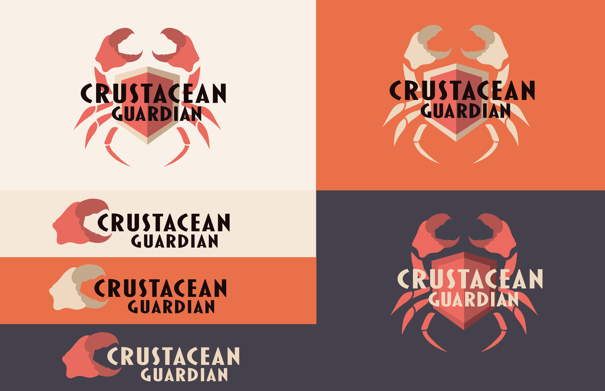
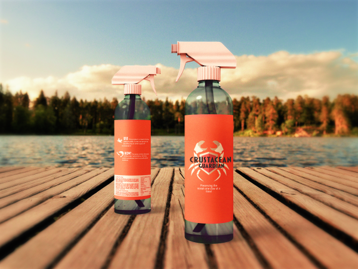

Crustacean Guardian is a brand study built upon an inside joke from early on in my graphic design studies. For a reason that's even a mystery to me, crabs would occasional sneak their way into projects I'd make (and sometimes even be the project's focus). When coming up with the concept of this brand, I ended up drawing upon my previous projects to create something new. This hypothetical company is focused on keeping crustaceans away from certain areas by using a spray that smells like their natural prey. By spraying the product in one area, it can give a person more control of where they are occupied. And thus, can make sure they are out of areas that could harm them.
